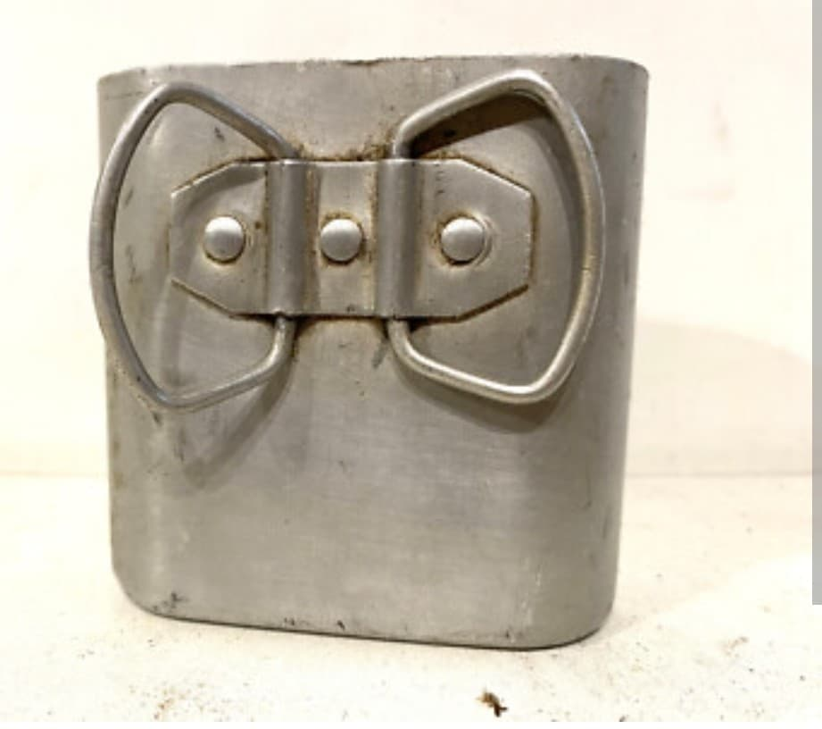
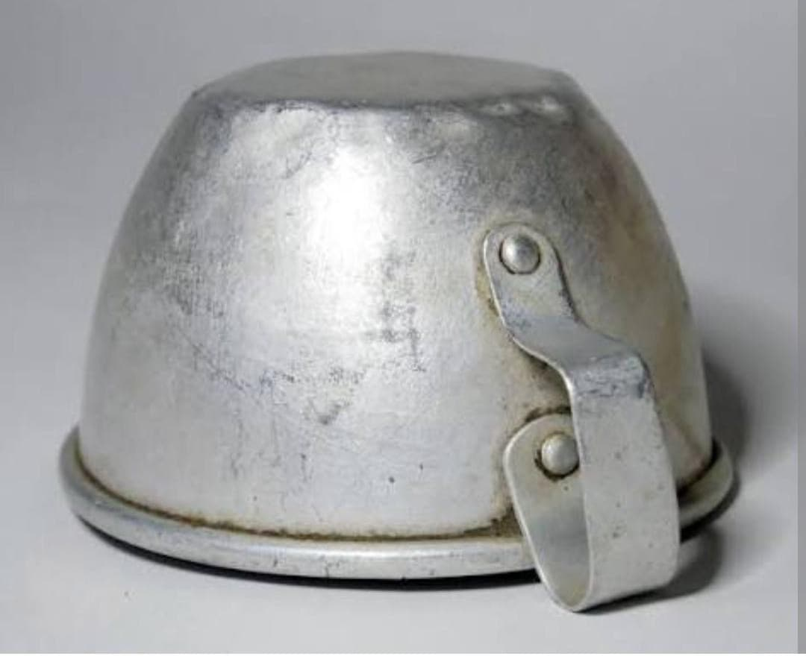
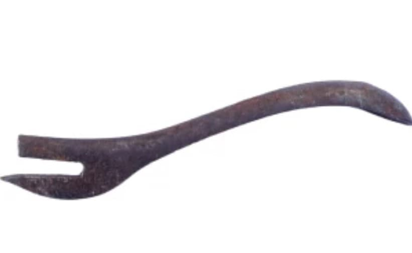
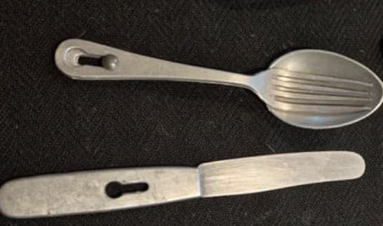

Introduction
La gamelle Modèle 1935 occupe une place essentielle dans l’équipement du fantassin français durant la Seconde Guerre mondiale. Conçue pour être robuste, pratique et facilement transportable, elle accompagne les soldats sur tous les fronts, de la mobilisation de 1939 aux combats de 1940.
Utilisée pour cuire, réchauffer ou simplement contenir les rations, elle représente l’un des objets les plus emblématiques du quotidien militaire. Sa conception simple mais efficace en fait un témoin fidèle de la vie du soldat, entre bivouacs, marches et longues périodes d’attente.

Caractéristiques
- Corps en aluminium réglementaire
- Couvercle servant d’assiette
- Poignées repliables pour la cuisson
- Compartiments internes pour ration individuelle
- Système de fermeture latérale typique du M35
Variantes WW2
La gamelle Modèle 1935 existe en plusieurs variantes durant la période 1939–1940, toutes réglementaires pour l’armée française :
- Aluminium brut – La version la plus courante
- Aluminium légèrement grisé – Variation d’usine
- Poignées soudées ou rivetées – Deux fabrications authentiques
Les gamelles peintes ou vernies ne sont pas représentatives de la dotation WW2.

Histoire & Contexte
Introduite en 1935, cette gamelle équipe les soldats français durant la mobilisation de 1939–1940. Sa conception en aluminium permet une grande légèreté tout en restant suffisamment résistante pour supporter les conditions du front.
Elle est également utilisée dans les unités de la France Libre, notamment en Afrique du Nord et au Levant.
Erreurs fréquentes
Certaines gamelles sont souvent présentées comme WW2 alors qu’elles ne correspondent pas à la dotation de 1939–1940. Voici les erreurs les plus courantes :
- Gamelles peintes – Ajout postérieur, non WW2
- Poignées modernes soudées grossièrement – Réparations récentes
- Modèles en inox – Production après-guerre
- Gamelles trop brillantes – Polissage moderne
Une gamelle WW2 doit impérativement être en aluminium brut, avec une patine cohérente et un système de fermeture d’époque.
Authentification avancée
Pour confirmer qu’une gamelle est bien de la période 1939–1940, plusieurs éléments doivent être cohérents :
- Aluminium d’époque avec usure naturelle
- Poignées repliables non remplacées
- Compartiments internes conformes au modèle M35
- Système de fermeture latéral d’origine
- Absence de pièces modernes ou de réparations visibles
Une gamelle WW2 présente généralement une patine homogène, sans traces de polissage récent.
Accessoires réglementaires associés
La gamelle Modèle 1935 est distribuée avec plusieurs accessoires indispensables au fantassin français de 1939–1940. Ces éléments complètent le paquetage individuel et permettent de préparer, consommer et ouvrir les rations de campagne.
Quart Modèle 1935
Le quart M35 accompagne systématiquement la gamelle. En aluminium, léger et robuste, il sert à boire, à manger ou à chauffer une ration. Sa poignée latérale permet une prise sûre même en conditions difficiles.

Tasse / Gobelet
La tasse en aluminium fait partie du matériel standard. Utilisée pour le café, le vin chaud ou les boissons distribuées au cantonnement, elle est simple, légère et parfaitement adaptée à la vie en campagne.

Ouvre‑boîte « Chien »
Le « chien » est l’ouvre‑boîte réglementaire fourni au soldat. Petit, en acier, il permet d’ouvrir les conserves de ration. Sa forme caractéristique en L le rend facilement identifiable dans le paquetage du fantassin.

Couverts réglementaires
Le soldat reçoit un jeu de couverts en acier : cuillère, fourchette et couteau. Simples, robustes et conçus pour résister aux conditions de campagne, ils se rangent facilement dans la musette ou avec la gamelle.
